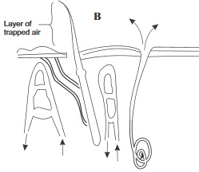

New Senior School Biology Practical Activity & Work Book 3
Chapter
3
SENSORY RECEPTORS AND SENSE ORGANS
Notable Concepts
Sensory receptors.
Sense organs.
Defects of sense organs and their correction.
Background Information
Living cells has response to stimuli as one of their characteristics but there are certain cells in organisms which are specialized to detect a particular type of stimulus. Such cells are called sensory receptors.
Such cells can be categorized into four groups, which are
(i) Chemoreceptors(which detect chemical stimuli like taste, smell, concentration of chemical substances in the blood e.t.c)
(ii) Mechano receptors (which detect stimuli of touch, sound, vibrations muscle contraction, pain e.t.c)
(iii) Photoreceptors (Which detect stimuli of light intensity and other electromagnetic stimuli
(vi) Thermoreceptors (which detect temperature and heat energy changes).
Sensory receptors are made up of sensory structures which are grouped into:
Primary sense cells(which have nerve ending e.g Touch receptors in the skin):
Secondary sense cells(which has no nerve cell but consists of group of sensory cells e.g taste buds in the tongue);
The sense organ(which has both the secondary sense cells, sensory nerve cells and other structures).
fig3.1a: Taste areas of the Tongue
fig3.1b: Senses of the Nose and Tongue
fig3.1c:
Sense Organ
fig3.2a:
Skin
How the organ functions
The skin detects senses of touch, temperatureandheatenergychanges, pressure and pain.Certain regions of the skin are more sensitive to a particular stimulus. Sensory receptors in the skin which are mainly dendrite ending of neurons receive sensations of feelings which are interpreted by the brain via the sensory (afferent neurones).
fig3.2b:
Taste Bud
How the organ functions
Taste buds
Which lie in grooves on the surface of the tongue receive the stimulus of taste from dissolved substances on the tongue.Basically the tongue can detect four types of taste which are sweet and salty taste at the front, sour taste at the sides and bitter taste at the back.
fig3.2c:
Smell (Olfactory) Sensory Cells
How the organ functions
Olfactorychemoreceptorsinmammals are at the epithelial linning of the upper portion of the nasal cavity. They are stimulated by the disolution of chemicals (from the surrounding air in the enviroment) on it.These chemoreceptors send off sensory impulses to the brain through the olfactory nerves.
fig3.2d:
The Eye
Structure of the eye
How the organ functions
How do we see:
Light rays from objects enter the eyes. They bend mostly at the air/cornea surface boundary.
They also bend at the aqueous humour, lens and vitreous humour. The light rays which carry the photo stimulus to be detected in the eyes, after being given a final adjustment and bending, focuses the image of the objects on the retina.
This stimulates photoreceptors called rod and cone cells. An electrical impulse is sent through the optic nerve to the brain.
The brain interprets the impulse and enables the perception of the correct position and distance, colour etc of the image to be seen clearly and distinctly when they are focused on the fovea centralis of the retina.
fig3.3:
The Ear
Sense of hearing and balance
How the organ functions
How do we hear:
Sound which reaches the ear in form of waves of vibrating air travels through the auditory canal and sets the tympanic membrane (eardrum) into vibration also.
The ear drum passes this vibration to earbonescalledossicles (the malleus, incus and stapes).
The vibration of the stapes makes the membrane of the oval window to vibrate.
This leads to the vibration of the peri lymph of the cochlea which pushed the round window out and in. The pressure wave movement in the perilymph sets the endolymph in motion, this movement results to the stimulation of sensory receptor cells. Auditory nerves sends the received impulse of hearing to the brain where it is interpreted as sound. In addition to hearing the ear is involved in the sense of balance. This occurs by means of the semicircular canal of the ear.
Eye Deffects
Illustration by Diagram
fig3.4a:
Deffect and its Features and correction
1. Short sightedness (Myopia)
Near objects are seen clearly while distant ones appear blurred.
Caused by eyeball being too long.
Light rays are focused in front of retina.
Correction
Using a concave or diverging lens
fig3.4b:
*
2. Long sightedness
Distant objects are seen clearly but near ones appear blurred.
caused by: (i) eyeball being too short it is called hypermetropia.
(ii) Or the lens and cilliary muscle loosing their elasticity with old age, it is called (presbyopia).
Light rays are focused behind the retina
Correction
Use of convex lens which is also called converging lens.
3. Astigmatism
Caused by uneven cornea surface
Vision is distored
Correction
Using lenses that will compensate for the uneven cornea
4. Cataract
Occurs mainly among the aged.Cloudy lens which cannot allow sufficient light to pass through.
Correction
Replacing the lenses with a plastic lens or using spectacles with the right kind of lens
5. Night blindness
Inability to see clearly in dimlightIt can be caused by vitamin Adeficiency
6. Xerophythalmia
This can result to permanent blindness.
It is caused by vitamin A
7. Conjuctivitis:
An infection in the eye which brings about inflammation of the conjunctiva.
fig3.4c:
Normal Sight (Both far and near object are focused on the retina )
General Questions
1. Chemical receptors do receive chemical stimuli while
receptors receive stimulus of light
2.
,
,
and
are senses of feeling which can be detected by sensory receptors at the skin.
3. Taste buds can be found in the
. It is secondary sensory cell.
4. Pressure receptors known as
corpuscles are found in the deeper parts of the dermis in the skin.
fig3.5:
Identify and label the part numbered 5 – 9
10. The
sends sensory impulses received by the olfactory chemoreceptors to the brain.
11. Write down the two chemical senses
and
12. Write down four parts of the eye that bend incoming lights rays
13. What visual receptors work best in dim light?
14. Reflection of light inside the eyeball is prevented by the
vitreous humour
pigment(black) choroid layer
aqueous humour
15. The adjustment of the focal length of the eye lens so as to appropriately form images distinctly on the retina is called
16. The contraction of the circular muscles of the iris and relaxation of its radial muscles results to
The pupils becoming larger and more light enters the eyes.
The cilliary muscles becomes expanded and more light enetrs the eyes
The pupils becomming smaller and less light enters the eyes.
17. The cochlea is a hearing organ or structure in the ear while the Eustachian tube and the semicircular canals are for __________ and _______
perceiving direction of sound
balancing air pressure and balance
clear audibility
18. The fluid that can be found in the inner ear are and
19. Short sightedness as an eye defect can be corrected by
20. Two eye defects that can be caused by vitamin A deficiency are
and
Expression Exercise
(1a) How is the lights rays entering into the eyes controlled?
(b) What is accommodation
(c) Write down the function of the retina
(2a) Write down two sensory funtions of the ear
(b) Write down four ear deffects
3. In the process of hearing all the following structures tabulated below are set into oscillation (Vibration), Write them down in the table in order in which they begin to vibrate.
Structures
Order of Vibration
(a)
Oval window
(b)
Anvil
(c)
Cochlea fluid
(d)
Tympanic
(e)
Stirrup
(f)
Hammer
5. In the process of vision in mammalian eyes, light passes through some, but not all, of the following structures; write down which of the structures light does pass through (a) Retina, (b) Cornea (c) Iris muscles (d) Lens (e) Optic nerve (f) Pupils
Practical Activities
1. Examine another student's (or your friend's) eyes on flashing a very dim light from a torch light to it and on flashing a shining light of another torch light on it. From your observation and knowledge of sense organs and sensory receptors, answer the following questions.
Write down what happen to the iris muscles and the pupil when
you flashed dim light
When you flashed shining light.
Are the actions observed, or that occurred voluntary or reflex actions? Give reasons for your answer.
2. Dissection of a Mammalian Eye First look at your partners eye and try to draw the parts you can see. Now obtain the head of a sheep or goat from the market or visit the abattoir for it. Observe the thick white sclerotic coat with the clearer thin cornea in the front. Identify the position of the optic nerve, the muscles attached to the eyeballs and the transparent cornea.
Using a short scissors cut the eye so you can see a front half and back half. Look inside both halfs and try to locate the blind spot and the retina. Identify the lens in the front half, the iris and the cilliary muscles. From your various observations, attempt the questions below.
(a) What nerve leaves the eyes from the blind spot?
(b) What was the shape of the lens of the eye observed? Is it elastic or stiff?
(c) Try to draw. The eye you have observed and compare it with an already existing eye model or drawing. (Draw in your biology practical notebook).
Investigating the response to a sharp tap near the kneeMaterials/apparatus required:
(i) Ruler, (ii) Stool
Procedure:
Work with a partner and let one of you sit on the stool with the legs crossed and swinging or hanging freely.
Using the edge of the ruler, let the other partner apply a sharp tap just below the knee cap of the partner that is sitting down.
Let the investigation be repeated with other partner sitting down and the other carrying out the activity.
Questions
What were the reactions of both partner s to the sharp tap?
(a) Did it take the lower leg any time to react?
With such sharp tap applied, could it have been possible to stop the knee from jerking?
What part of the nervous system controls such response you' ve observed?
Investigating the response of the eye to bright light
Apparatus/Material required: A mirror
Procedure:
Using the diagram of the eye in fig. 3.6 below as a guide, identify the parts of your eyes as you look through the mirror.
Cover your right eye with your right palm for about five minutes,
Then observe the pupil immediately you remove your hand.
Now go to a place where light is very bright and observe the size of the pupil.
Questions
(a) State your observations about the size of the pupil:
(i) Immediately you removed your hand?
fig3.6:
(ii) In very bright light?
(iii) Explain the biological significance of your observations in (i) and (ii) above
To investigation if different tastes are detected by different areas of the tongue
Apparatus / Materials:
Short piece of drinking straws, lemon juice; sugar solution, salt solution and bitter leaf or quinine solution.
Procedure:
First draw or sketch the outline of your tongue using the diagram in fig 3.1a as guide
Touch all the parts of your tongue with the lemon juice. Put a sign like plus sign where your tongue can detect taste.
Repeat the 2nd step using the other solutions, using a fresh piece of straw for each case.
You can differentiate the signs by using red sign for sour (lemon solution), blue for salt solution, black for bitter leaf and quinine solutions and green for sugar solution.
Questions
(a) Did you observe the taste of each of the solutions more pronounced in a particular area of the tongue than other areas if Yes explain your answer. If No tell us why?
Test of Practical Work
fig3.7:
Study the diagrams above carefully
1a. Identify what they illustrate in the process of vision
(b) Which of the diagrams is illustrating focusing near objects
(c) Explain the role of cilliary muscles in the process.
(d) What distance is called the near point?
fig3.8:
2. Use the diagram of the tongue below to answer the question below
(a) Identify the parts that detects the following taste according to the A B C D on the diagram(write your answer within the table below)
Taste
Part
Salty
Sour
Bitter
(b) Explain the function of Eustachain tube in the mammalian ear
S S C E PAST QUESTIONSSENSORY RECEPTORS AND SENSE ORGANS
June 97Q1
1. Define Accomodation or what is meant by the term Accomodation?
2. List three types of stimuli detected by the sensory nerve endings on the skin
3. Explain the function of the cilliary muscle of the eye
June 1993 Q6a-b
4. Diagram A and B below represent the reaction of some structures in the mammalian skin to different environmental conditions. Use them to answer Questions (a) and (b)
fig3.9A:
fig3.9B:

(a) Which of the diagrams represents the reactions of the skin to cold condition?
List four Observations from the diagram to support your answer
June 1995 Q9 abc
6. Use the diagram below to answer Questions (a) to (c).
fig3.91:
Name the structure illustrated above
State the organ in which it is found
(b) Name the parts labelled I – IV
(c) Name the fluid that is found within parts of the structure labelled I – IV


 *
*